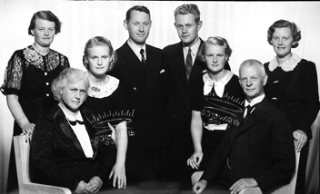

Tekst: Thor Einar Hanisch UiA og AVA
Presentasjon: Min tremenning Jan Gabriel Langfeldt av Ny-Hellesund- slekten, har i boka Mønnich- slekten 1718-2002 gitt en god og konsis presentasjon av min bestefar Einar Jørgensen. Siden jeg også er av Mønnich – slekten gjennom Einars hustru Ada Concordia Mønnich, Ada, min bestemor, velger jeg å gjengi den her:
«Einar Jørgensen, oberst, ordfører i Kristiansand, født 12/6 1875 i Randesund, Kristiansand, død 13/6 1944 i Kristiansand. Far: Georg Theodor Jørgensen, hovedbokholder og reder, født 9/9 1845 i Kristiansand, død 29/5 1922 i Kristiansand. Mor: Karen Margrethe Dahl, født 5/9 1850 i Vanse, Vest- Agder, død 22/5 1932 i Kristiansand.
Einar ble løytnant i 1896, kaptein i 1900, major i 1910 og oberst i 1930. Han ble valgt til medlem av bystyret i Kristiansand for Venstre. Han var ordfører fra 1914 til 1920 og fra 1932 til 1937.
Da frasa han seg gjenvalg, men fortsatte som medlem av bystyret hvor han virket i nesten 30 år til sammen. I tillegg hadde han mange verv i disse årene. Han var formann i gassverkets styre, formann i jordstyret, medlem av elektrisitetsverkets styre, bibliotekstyret, tomteutvalget, byplankomiteen, flyplasskomiteen, Kristiansand-Hirtshals- komiteen, formannskapet og finansutvalget. I 1928 ble han valgt til stortingsrepresentant og representerte Kristiansand Venstre i 3 år. Einar ble beskrevet som en spenstig, arbeidsglad og kultivert herre, med en personlighet som hevet seg over det grå gjennomsnitt både i karakter og intellekt. Fædrelandsvennen skrev følgende om han 19/3 1979: Hans ranke skikkelse ble lagt merke til når han hurtig skrittet avgårde. Og han såes ofte til hest gjennom byens gater, helst til Gimlemoen og traktene der omkring, men også på vestsiden ved Grotjønn. Jørgensen var timelærer i historie på Handelsgymnasiet og hadde en periode som stortingsmann. Han og Rudolf Peersen knivet om den plassen.»
Jeg må si at jeg er fascinert av min bestefars sindige og mangslungne gjerning i konstant tjeneste for vår kjære by. Som overlærer og lektor ved KHG i ti år, syntes jeg det var artig å undervise fra samme kateter i samme rom i første etasje i Østre Strandgate 17A, i huset der også min bestemor var født. Erik Dahl-Hansen, somrenes gamle hedersmann på Helløya i Gamle Hellesund, husker godt Jørgensen som engasjerende foreleser derfra om sivil og militær historie. Og hvor stram hans skikkelse var når han hver morgen uansett vær, stupte fra brygga, som nå fortsatt tilhører vårt og flere av etterslektens Concordia, med Majorstua som det sentrale rom. Morgenbading er fortsatt obligatorisk pensum» for hele vår familie. Like nært er det for meg, som akademisekretær og daglig leder for Agder Vitenskapsakademi gjennom 10 år fra 2002 til 2012, med Ernst Håkon Jahr som preses, å ha arbeidet på regimentsjef Jørgensens plass i General Oscar Wergelands Hus på UiAs Campus Kristiansand, Gimlemoen. En av mine første og kjæreste opplevelser var da jeg satt på med han på hans brune hest fra Markensgaten 7, hans og Adas hjem, til og tilbake fra regimentskontoret på Gimlemoen og inn i, slik jeg da opplevde den, enorme porten inn til haven innenfor, der Einar hadde stablet vinterveden så utrolig pertentlig. Etter Einars og Adas bortgang var det også en glede å besøke vår onkel og tante, Helge og Helga Dahl-Jørgensen, mor og far til mine og mine søskens søskenbarn Bernt, Knut og Ada, der. For oss var det et tap da det karakteristiske brune murhuset ble revet i 1970 og erstattet av det ruvende Storebrand-bygget, rett overfor Geheb Konditori med de herlige Napoleonskakene. Huset kan vi gledelig nok minnes ved at våre påpasselige Rusleturforfattere Mæsel, Mæsel og Munksgaard har avbildet det i Rusleturer i Kvadraturen 2, s. 31.
Einar Jørgensens mange verv avspeiler også hans mange interesser. Som høytstående offiser satt han på Stortinget naturlig nok i Forsvarskomiteen, der han talte engasjert om nødvendigheten av å ha et sterkt nasjonalt og regionalt forsvar. I Kristiansand var han med på å stifte en forsvarsforening i 1937, da han tidlig vurderte krigsfaren som overhengende og var dypt bekymret over det brukne geværs politikk. Natten 9. april 1940 meldte han seg til krigstjeneste på Gimlemoen, men ble avvist med henvisning til at Generalmajor Liljedahl hadde gitt ordre om at alle militære straks skulle bryte opp for å drive oppholdende strid oppover Setesdal. En pensjonert oberst var det ikke behov for! I ettertid holdt Liljedahl på å bli stilt for krigsrett for denne tilbaketrekningen, som gjaldt om lag 2000 militære, det største antall i Kristiansand side Oscar Wergelands tid, som kunne ha unnsatt Odderøya, holdt havnen og blokkert Kjevik, og dermed med stor sannsynlighet kunne ha drevet inntrengerne tilbake. I stedet fikk vi den stort sett ydmykende tilbaketrekningen av det store antall norske tropper, et tilbaketog som sjefredaktør Johs. Seland i Fædrelandsvennen, som selv deltok, så oppgitt og frustrert har beskrevet. Det er ikke for mye sagt at denne hendelsen gjorde enormt inntrykk på Einar Jørgensen som så hva som kom. I sin første ordførerperiode fra 1914 - 1919 hadde han jo opplevd 1. verdenskrigs utbrudd i august 1914, da Norge var rimelig opprustet og, i motsetning til i 1940, maktet å forsvare nøytralitetspolitikken. Samt krigens største sjøslags, Jylland- slagets, konsekvenser for Kristiansand i 1916, med alle de falne og sårede som ble tatt hånd om i Kristiansand. Verst av alt: 49 skip registrert i byens skipsregister ble torpedert, til dels med torpedoer med ingredienser av nikkel fra byens eget nikkelverk, som ifølge kontrakter inngått før krigen, jevnlig forsynte tyskerne med dette for ubåtene så viktige metallet. «På en forunderlig måte forskånet skjebnen byen for smerteligere tap av menneskeliv ved krigsforlisene», forteller Joh. N. Tønnessen, oss i Kristiansands historie 1914-1945, i Krigens Århundre, min hovedkilde for denne artikkelen i Christianssands Byselskabs årskrift.
I begge hans lange ordførerperiode var det krevende å drive effektiv finanspolitikk. Under Vk 1 gjaldt det for Einar og borgermester Knudtzon å motvirke dyrtiden og vareknappheten som krigen medførte, og samtidig unngå at byen skulle ende i bunnløs gjeld etter krigen. Det ble anslått at skattøret gradvis måtte settes opp til 18, mens en bare med nød og neppe nådde 13 på grunn av massiv folkelig motstand, ikke minst målbåret av snekkermester Olav Brunvand, «byens sosiale samvittighet», som NRK Sørlandets Reidar Mosland så fortjenstfullt har skrevet bok om. Dermed ble byens gjeld tidoblet fra 1914-20. Ordføreren uttalte kort etter krigsutbruddet, da det ble et folkeopprør mot hevingen av skattøret: «Nå har folk lett for å betale, siden kan det bli verre. Det vil være lettsindig av kommunen å vente med å styrke sin økonomi». Alle var likevel rimelig enige om at en rekke dyrtidstiltak var nødvendige, men dermed ble altså byens finansielle krise fra 1920-24 ikke til å unngå. Alt i 1917 mistet Venstre flertallet i bystyret, men en politisk nokså vingestekket ordfører Jørgensen var det likevel så stor tverrpolitisk oppslutning om at han fikk fortsette i sin funksjon helt til nytt valg 2 år senere. Da slo motgangen for Venstre nasjonalt så sterkt inn at opposisjonen overtok ved noe av en politisk revolusjon ved stortingsvalget i 1918 og kommunevalget i 1919. Det var nok mest målsaken og forbudspolitikken, i mindre grad finanspolitikken, som var drivende krefter i dette. Venstre var splittet, Einar Jørgensen forfektet måtehold, først i 1927 var det igjen lovlig brennevin i handelen. Fædrelandsvennen ble anklaget for å ha sviktet Venstre ved sin lunkne holdning både i forbudssak og målsak. Fædrelandsvennen kompenserte ved å skrive: «Reaksjonen: Den brer seg livlig og raskt i byen nå. Skal Venstre gjenvinne sin posisjon, må det komme bort fra det absolutte formynderskap og den brutale forbudslinje og tilegne seg troen på enkeltmenneskets vilje til å klare seg uten alt for mange barnepiker. Jo mer umyndig et folk gjøres, desto lettere har reaksjonen for å gjøre seg gjeldende.»
En av de viktigste innsatser Einar Jørgensen gjorde for Kristiansand skjedde under hans andre ordførerperiode, og det gjaldt flyplasslokaliseringen. I denne lange saken velger jeg som utgangspunkt at Stortinget mot 52 stemmer 21. juni 1935 vedtok at Sørlandets flyplass skulle ligge på Kongsgård. I formannskapet var 11 for og 4 mot å tiltre Stortingets beslutning. I bystyret ble det en noe amper debatt, som endte med at innstillingen ble vedtatt mot 3 stemmer. Da ordfører Jørgensen talte mot, gikk faktor Øydegard i rette med ham fordi «han sta satte seg mot all utvikling». Så langt syntes saken klar, de første bevilgninger ble gitt, og forberedelser truffet for å sette arbeidet på Kongsgård i gang, men så kom Fædrelandsvennen 6/1 1936 med et oppslag som vel viste seg avgjørende for å snu utviklingen: For det første trengte byen Kongsgård til andre formål, for det andre ville Kjevik-prosjektet bli langt billigere, på tross for kostnaden for det arbeidet som alt var gjort på Kongsgård, og for det tredje var det på Kjevik langt rommeligere plass. Christiansands Tidende og Sørlandet raste mot sin kollega. Den siste skrev, at da det var dragkamp om Sørlandets flyplass, og at det nå var avgjort at Kristiansand skulle få den om den ble lagt på Kongsgård, var det forræderi mot byen å lansere et prosjekt som kunne forpurre dens sjanse til å få flyplassen.
Men så kom det vektige uttalelser for Kjevik. Luftfartsrådet kom på befaring av begge plasser og betegnet Kjevik som en av de beste plasser det hadde sett. Statsråd Oscar Torp, Bernt Balchen o.a. fant etter selvsyn at Kjevik var strålende. Balchen sa at Kongsgård var ubrukelig til natt- og blindflyging. Generalmajor Liljedahl pekte på den fare det var for byen i krigstilfelle å ha en flyplass så nær byen som Kongsgård, men oberstltn. Gundersen, viseformann i flyplasskomiteen, sa at tanken på Kjevik var «helt absurd, ja sinnsvak, abnorm», at den måtte slåes i hjel med en gang og bare var fremkommet for å sabotere hele flyplassaken: «Nei, dette må det kjempes mot med nebb og klør. Vi må vise oss som patrioter og ikke fingre noe mer med dette.» Formannskapet vedtok så mot 4 stemmer at Kjevik ingen interesse har for Kristiansand, og Bystyret fulgte opp på samme måte med 35 mot 25 stemmer. Hensynet til arbeid på Kongsgård for de arbeidsløse i byen, og nærheten til bykjernen som de forretningsdrivende og industrien ønsket, veide tungt. Tross alle sakkyndige advarsler syntes Kongsgårdsletten å være trumfet igjennom.
29. mai kom den avgjørende sensasjonen i flyplass-thrilleren. Et privat konsortium bekjentgjorde at det på egen hånd hadde arbeidet for Kjevik, fått håndgitt eiendommen, og kunne garantere plassen, med bro over Ålefjærfjorden, ferdig på 1 år for 2.1 mill. kr., mens Kongsgård ville kost 3.7 mill. kr. og først ville være ferdig om 4 år. På driftsutgiftene ville det også bli 1.5 mill. kr. å spare. Et meget viktig moment var at Kongsgård da kunne frigjøres for industri, boligbygging og idrettsplass, og salg av tomtene ville gi kommunen en pen gevinst. Borgermester Andreas Kjær syntes det var innlysende at Kjevik var den beste plassen. Formannskapet snudde i det bare to stemte mot Kjevik, Regjeringen handlet lynraskt med positiv innstilling til Stortinget, som 15. juli enstemmig vedtok flyttingen av plassen til Kjevik, forutsatt at prosjektet, inklusive veianlegget, kunne gjennomføres innenfor rammen som gjaldt for Kongsgård.
Det vil føre for langt innenfor en rimelig ramme for denne artikkelen å gå inn på alle de komplekse industrielle saker som fant, eller ikke fant, sin avgjørelse i den ene eller andre av Einar Jørgensens lange ordførerperioder. Det gjelder også samferdselspolitikken der navnet Sørlandsbanen, ikke Vestlandsbanen vant frem, vei- og ferjeforbindelser, samt arealutnyttelser foran og etter kommunesammenslåinger med Oddernes. Disse kan en i noen grad utlede av de verv han har hatt og dermed hatt varierende grad av innflytelse på. La meg bare nevne kort at så å si alle økonomer, i ettertid er enige om Norges Banks innstramninger i kreditten og pengemengden, etter til dels løsslupne tilstander i 20-årene, langt på vei rammet hele landet og i høy grad Kristiansand, men også avspeilte USAs og Europas politikk. Det ble vanskelig å få lån og enda vanskeligere å betjene dem. Bedrifter gikk konkurs og bønder måtte gå fra gårdene sine fordi banken sto så hardt på kroneverdien. Etter det kom man fram til at en kontrollert inflasjon er det beste. Litt inflasjon smører økonomien. For mye inflasjon skaper økonomisk ustabilitet. I dag vokter banken bedre tilliten den er betrodd, og har siden 2001 ansett 2.5 % årlig inflasjon som det beste.
Ellers er det grunn til å nevne utfordringene for byen og ordføreren som ble forårsaket av tuberkulosen, difterien, og influensaepidemien Spanskesyken representerte under Vk. 1. Da eldste datter Liv fikk difteri, og far Einar kunne være smittet, ble han internert på lasarettet i Tordenskjoldsgate og selv måtte stryke hvert brev han sendte ut med strykejern.
Som sagt gikk oberst, ordfører og stortingsmann Einar Jørgensen bort 13. juni 1944. Han ligger på Kristiansand kirkegård nær de allierte krigsgravene sammen med sin hustru Ada og datter Bergljot Augensen, min tante som sammen med sin mann Oscar Augensen, min onkel, sønn av kommandør Augensen i Marviga, oppholdt seg på et jernbaneanlegg i Persia da krigen brøt ut i 1940. De reiste rundt Afrika til USA og over Atlanteren til England og meldte seg til tjeneste. Bergljot tjenestegjorde i FO 2, Forsvarets etterretningstjeneste, til hun ble drept ved en trafikkulykke i London 3. juni 1943. Hun ble påkjørt av en buss under et bombeangrep og står som nr. 5 på det store monumentet på Kristiansand kirkegård over falne i alliert tjeneste. Marineløytnant Oscar døde 27. januar 1958 i Bergen. Han kom aldri over tapet av sin «Bella».
Einar Jørgensen kunne nok ha avsluttet sin militære karriere som generalmajor på Fredriksten i Halden. Uansett kunne han ikke få seg til å flytte fra sin kjære hjemby, der han stadig, inntil krigen kom, hadde så mange jern i ilden. Hans første kulturelle oppgave i hjembyen var å være formann i Gymnasiesamfunnet Idun ved Kristiansand Katedralskole. Siden godkjente han som ordfører gatenavnet Wergelandsveien og tok imot Oscar Wergeland Monumentet, i Ravnedalen ved avdukingen i september 1917. I en liten tale forsikret han at byen ville ta vel vare på monumentet. Til slutt tilføyde han et fremsynt håp om at det ville inspirere byens borgere til å gå i Oscar Wergelands fotspor og bli naturelskere som han var det - og ikke minst naturvernere.